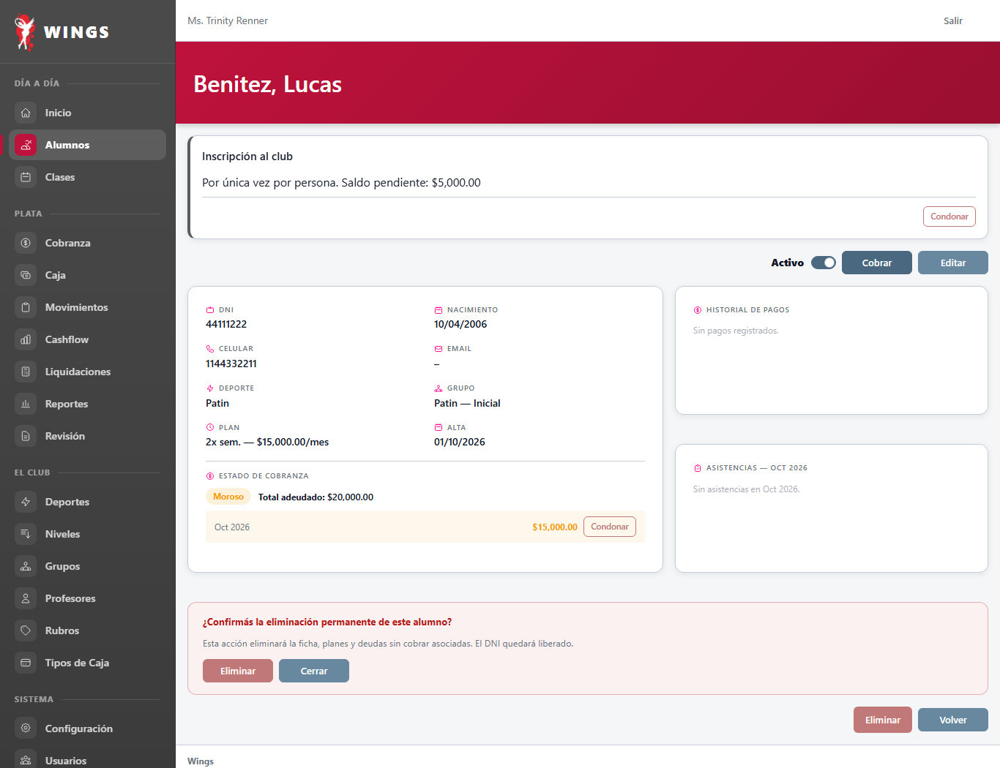
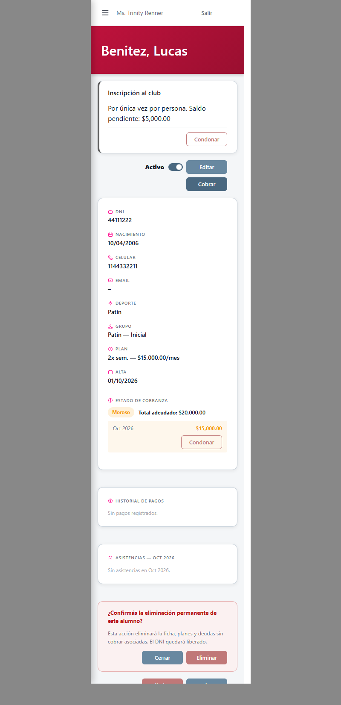
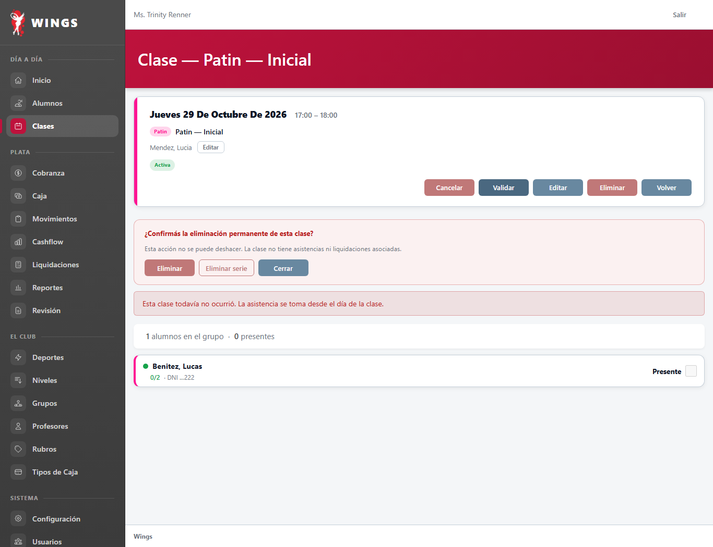
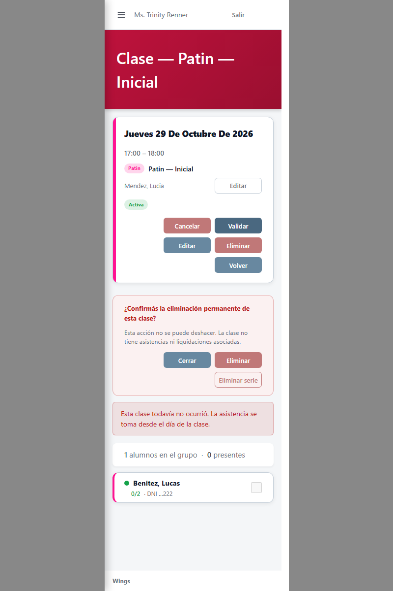

28/10/2026 · Gemini CAB · Capturas reales de Chrome con datos sintéticos locales. Sin despliegue.
5928a686). Se corrigieron los botones «Eliminar» (ds-btn--danger) y «Cerrar» (ds-btn--secondary) del panel de confirmación de eliminación permanente del alumno en resources/views/alumnos/show.blade.php, adoptando el formato del sistema y midiendo 96×32 px, idéntico al panel de clase.
Los botones «Eliminar» (peligro, fondo rojo) y «Cerrar» (secundario, fondo neutro con borde) ahora tienen formato completo de botón del sistema y miden 96×32 px.


Ficha de clase: los botones Eliminar y Cerrar tienen exactamente el mismo tamaño (96×32 px) y estilo que los del panel de alumno.


Capturas tomadas con Chrome headless sobre el DOM real de la aplicación con datos sintéticos locales. En celular se utilizó marco con <iframe> de 375 px para garantizar maquetación real sin recorte.